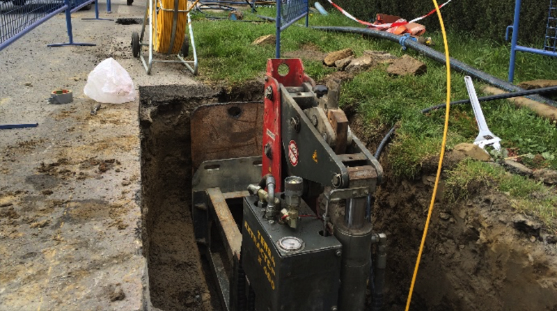

Chantier d’éclatement de canalisation d’eau potable
Commune d’Antrain (35), renouvellement sans tranchée par la technique de l’éclatement de la canalisation fonte existante et reprise de branchements
Résumé du chantier
- Maitre d'ouvrage
- Syndicat Intercommunal des Eaux d’Antrain
- Débuté
- Mars 2016
- Réception
- Mars 2016
- Montant HT des travaux
- 24 882 €
- Localisation
- Commune d’Antrain, route de Pontorson accotement de la route départementale 175
- Nature du réseau à réaliser
- Alimentation en Eau potable
- Maitrise d'oeuvre
- Service technique du syndicat Mixte de Production d'eau potable du Bassin du Couesnon
- Spécificité du projet
- Travaux à réaliser dans le cadre des travaux sans tranchées par la technique de l’éclatement. Matériel interne à l’entreprise OUEST TP
La réhabilitation du réseau d’eau potable c’est fait dans le cadre du « sans tranchée ».
Pour ce faire, l’entreprise OUEST TP a utilisé sa propre machine à éclatement à câble, modèle « Aquarex TERRA EXTRACTOR X 400 » de 40 T.
Mise en place d’une alimentation provisoire, puis éclatement d’une canalisation fonte Ø 80 existante et remplacement par une canalisation PEHD « EGEPLAST PE 100-RC SLM » Ø 102.2/125 MM PN 16 sur 220 ml de long.
En fin de travaux, reprise 3 branchements d’eau potable et fourniture et pose d’un poteau incendie.